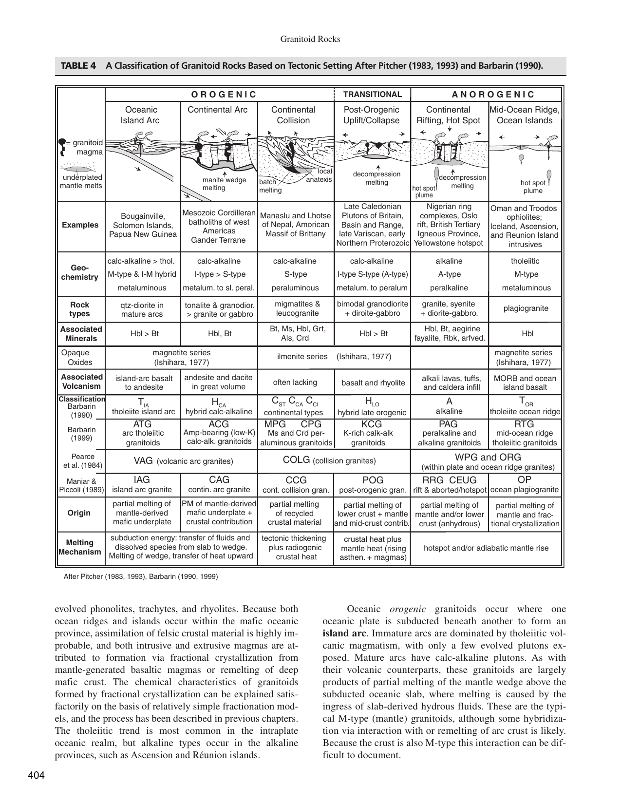

The term migmatite was introduced into petrological literature in 1907 by the Finnish petrologist Jakob Johannes Sederholm, derived from the Greek $\mu\tilde{\iota}\gamma\mu\alpha$ (migma, meaning "mixture").
In modern metamorphic petrology (Winter, 2014, pp. 405–420; Bucher & Grapes, 2011), a migmatite is formally defined as an ultra-composite, megascopically heterogeneous rock found typically in high-grade metamorphic terranes. It consists of two or more repetitively layered or intimately intermingled constituents:

Migmatites mark the transitional thermal boundary zone between solid-state metamorphism and igneous magmatism (anatexis):
In continental collision zones, free aqueous fluid is rapidly consumed at lower grades. Consequently, high-grade migmatite anatexis is driven primarily by vapour-absent dehydration melting of hydrous phyllosilicates (Winter, 2014, p. 414):
| Migmatite Structure | Morphology & Geometric Fabric | Melt Fraction & Deformation Intensity |
|---|---|---|
| Stromatic (Layered) | Regular, planar, alternating parallel sheets of leucosome and melanosome | Low to moderate melt fraction ($10\text{--}20\%$); shear strain parallel to foliation. |
| Dictyonitic | Reticulate, vein-like network of leucosomes following intersecting shear bands | Melt localized along brittle-ductile conjugate fracture systems. |
| Schollen (Raft) | Isolated, angular fragments/rafts of paleosome floating within a leucosome matrix | High melt fraction ($> 30\text{--}40\%$); brecciation of brittle competent layers. |
| Phlebitic | Irregular, wavy, ptygmatically folded leucosome veins branching through host rock | Moderate melt fraction; ductile ptygmatic bucking during compression. |
| Nebulitic | Fuzzy, ghost-like patches with indistinct, diffuse boundaries | Very high melt fraction ($> 50\%$); near-complete magmatic homogenization. |
Incorrect: Low-grade metamorphic rocks (sub-greenschist to greenschist facies, $T \approx 200\text{--}400^\circ\text{C}$) and medium-grade rocks (epidote-amphibolite facies, $T \approx 400\text{--}550^\circ\text{C}$) operate entirely in the solid state. Temperatures in these regimes are far below the minimum wet granite melting solidus ($\sim 650^\circ\text{C}$). Under no circumstances can partial melting (anatexis) or migmatite generation initiate in low- to medium-grade regimes.
Incorrect: Low-grade metamorphism produces fine-grained slates and phyllites characterized by hydrous minerals (chlorite, sericite, actinolite). It cannot produce the granitic leucosomes, refractory restites, and high-temperature partial melts that define migmatites.
Incorrect: While migmatites border upper-amphibolite facies, they are universally and unequivocally classified as the benchmark products of high-grade metamorphism (Winter, 2014, p. 405; Bucher & Grapes, 2011; Bangar, p. 87). Grouping migmatite formation with "medium grade" is technically inaccurate because the thermal energy required to cross the crustal solidus ($T > 650\text{--}700^\circ\text{C}$) strictly defines high-grade conditions. The official OPSC answer key specifically designates (D).
Correct: By universal petrological consensus (Winter, 2014; Bucher & Grapes, 2011; Miyashiro, 1994; Bangar, p. 87), migmatites are found exclusively in high-grade metamorphic terranes (upper amphibolite and granulite facies, $T = 650\text{--}850^\circ\text{C}$, $P = 4\text{--}10\text{ kbar}$). At these extreme temperatures, hydrous minerals break down via dehydration melting, generating in-situ granitic partial melts (leucosomes) alongside refractory residual restites (melanosomes).
| Metamorphic Grade | Temperature Range | Metamorphic Facies | Diagnostic Pelitic Mineral Assemblage | Characteristic Rock Types |
|---|---|---|---|---|
| Very Low Grade | $150\text{ to } 300^\circ\text{C}$ | Zeolite, Prehnite-Pumpellyite | Illite, Smectite, Chlorite, Quartz | Argillite, Slate |
| Low Grade | $300\text{ to } 450^\circ\text{C}$ | Greenschist | Chlorite, Muscovite (phengite), Albite, Quartz | Phyllite, Chlorite-schist, Greenschist |
| Medium Grade | $450\text{ to } 650^\circ\text{C}$ | Epidote-Amphibolite, Amphibolite | Biotite, Almandine Garnet, Staurolite, Kyanite | Garnet-mica schist, Kyanite schist, Amphibolite |
| High Grade | $650\text{ to } 850+^\circ\text{C}$ | Upper Amphibolite, Granulite | Sillimanite, K-feldspar, Cordierite, Peritectic Garnet, Hypersthene | Migmatite, Sillimanite gneiss, Granulite, Charnockite |
A pelitic gneiss in a continental collision core undergoes partial melting at $T = 720^\circ\text{C}$ and $P = 6\text{ kbar}$. Write the dehydration-melting reaction for muscovite and identify which products partition into the leucosome and which into the melanosome.
Solution: The muscovite dehydration-melting reaction is: $$\text{Muscovite} + \text{Quartz} + \text{Plagioclase} \rightarrow \text{Granitic Liquid (Melt)} + \text{Sillimanite} + \text{K-feldspar}$$ - Leucosome Partitioning: The hydrous granitic liquid (rich in normative quartz, albite, and orthoclase components) cools and crystallizes to form the light-colored, felsic leucosome veins. - Melanosome Partitioning: Insoluble refractory prismatic crystals of sillimanite, along with residual unmolten biotite, partition into the dark, aluminous melanosome restitic border.
Explain the physical concept of the Rheological Critical Melt Fraction (RCMF) in a high-grade migmatite terrane.
Solution: The Rheological Critical Melt Fraction (RCMF), typically between $25\text{ and } 35\text{ volume}\%\text{ melt}$ (van der Molen and Paterson, 1979), marks the fundamental mechanical threshold where: - Below RCMF ($< 25\%$ melt): The rock behaves as a rigid, grain-supported solid framework with isolated melt pockets in grain junctions; bulk viscosity remains high ($\eta \sim 10^{18}\text{ Pa}\cdot\text{s}$). - Above RCMF ($> 30\text{--}35\%$ melt): The solid grains become completely suspended in the liquid melt; bulk viscosity plummets by $10\text{ to } 14\text{ orders of magnitude}$ ($\eta \sim 10^4\text{ to } 10^6\text{ Pa}\cdot\text{s}$), causing the rock to behave as a flowing magma capable of buoyant diapiric ascent and pluton formation.
Distinguish between a "restitic melanosome" and a "cumulate melanosome" in migmatite petrology.
Solution: - Restitic Melanosome: Represents the refractory solid residue left behind when the lowest-melting eutectic components (quartz + feldspar) are selectively extracted as liquid melt (e.g., concentrated restitic biotite, garnet, and sillimanite). - Cumulate Melanosome: Represents early-crystallizing high-temperature mafic crystals that precipitate from the anatectic melt and accumulate gravitationally or mechanically along the crystallization front.
What is "ptygmatic folding" in a migmatite and what does it reveal about the relative viscosity of the leucosome vs. the paleosome host?
Solution: Ptygmatic folding refers to tortuous, highly irregular, meandrine buckle folds developed in isolated granitic leucosome veins cross-cutting a metamorphic host rock. According to Biot's buckle folding theory, ptygmatic folds develop when a relatively competent, high-viscosity vein is embedded in an incompetent, lower-viscosity, ductile host matrix undergoing strong bulk layer-parallel shortening.
Why do water-saturated melting curves (wet solidus) have negative $dP/dT$ slopes, whereas dehydration-melting curves have positive $dP/dT$ slopes in $P\text{-}T$ space?
Solution: Governed by the Clapeyron equation: $\frac{dP}{dT} = \frac{\Delta S}{\Delta V}$. - Wet Solidus ($\text{Rock} + \text{H}_2\text{O} \rightarrow \text{Melt}$): Because free water is consumed and water dissolves readily into granitic melt with a high density, the change in volume is negative ($\Delta V < 0$), while entropy increases ($\Delta S > 0$), producing a negative slope ($dP/dT < 0$). - Dehydration Melting ($\text{Hydrous Mineral} \rightarrow \text{Melt} + \text{Anhydrous Solids}$): No free fluid phase is consumed; the liquid melt occupies more volume than the dense solid reactants ($\Delta V > 0$), resulting in a positive slope ($dP/dT > 0$).
Under what specific geodynamic conditions do migmatites form extensive regional belts in the continental crust?
Solution: Regional migmatite terranes develop in deep orogenic roots of continent-continent collision zones (e.g., the Greater Himalayan Crystalline complex, Variscides, and Grenville orogen). Crustal thickening ($> 60\text{--}70\text{ km}$) combined with radioactive radiogenic heat production ($U, Th, K$) in overthrust pelitic sheets drives temperatures above $700^\circ\text{C}$, triggering regional crustal melting, channel flow, and leucogranite plutonism.
What is a "diatexite" and how does it differ from a "metatexite" in the Mehnert-Brown migmatite nomenclature?
Solution: - Metatexite: A migmatite exhibiting segregated, incipient melting where primary metamorphic structures (foliation, layering) are preserved in the paleosome/mesosome, and melt fractions remain low ($< 25\%$). - Diatexite: An advanced migmatite that has exceeded the RCMF ($> 35\text{--}50\%$ melt); primary metamorphic layering is completely obliterated by pervasive melting and turbulent magmatic flow, producing nebulitic to schollen textures transitioning into true anatectic granite.
Why are peritectic garnets in migmatite leucosomes typically unzoned or exhibit flat chemical composition profiles compared to prograde metamorphic garnets?
Solution: Prograde garnets grown in the solid state below $600^\circ\text{C}$ preserve sharp growth zoning (Mn-rich cores to Fe-rich rims) because intra-crystalline lattice diffusion is sluggish. In contrast, peritectic garnets in migmatites crystallize at extreme temperatures ($T > 750\text{--}800^\circ\text{C}$) in equilibrium with melt; at these high temperatures, volume diffusion is extremely rapid, homogenizing any chemical gradients and producing flat, unzoned compositional profiles.